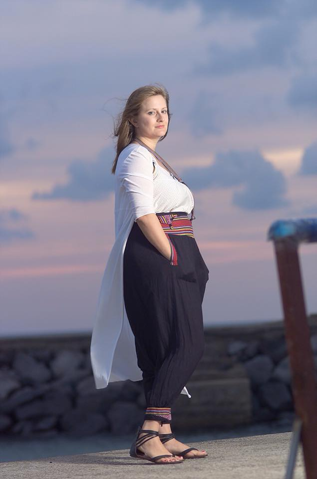
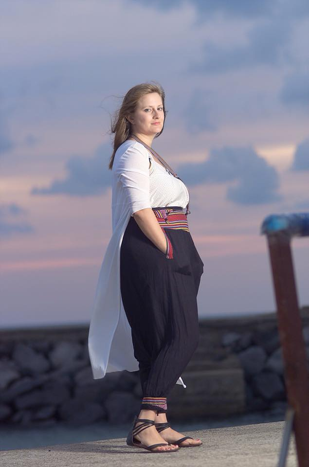

Stories, Present to Past
I live in Philadelphia, but I lived for years in Jeju, a volcanic island in South Korea. Sometimes I took trips from there to Bali, another volcanic island, to visit family I hadn't seen since I was 10.
Living in Philly


Growing Up with a Baby


Jeju-do, South Korea: Teaching and Learning
 
